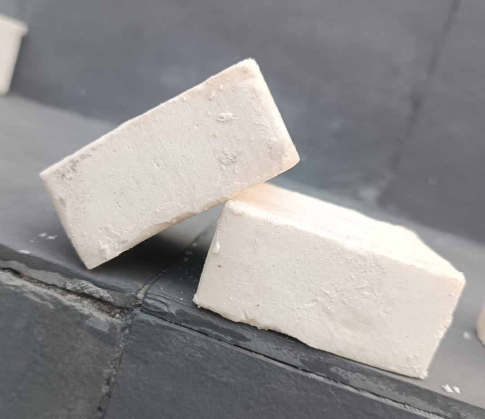

Transformamos óleo de cozinha usado em sabão artesanal — protegendo a água, gerando renda e cuidando do meio ambiente.
Quando jogado na pia ou no lixo comum, o óleo de cozinha forma uma camada impermeável nos rios e córregos, impedindo a oxigenação da água e matando a vida aquática.
Encanamentos entupidos. O óleo solidifica nas tubulações, causando entupimentos e aumentando os custos de saneamento nas cidades.
Rios e lagos contaminados. Uma única colher de sopa de óleo é capaz de contaminar uma piscina olímpica inteira de água.
Solo inutilizado. Quando descartado no lixo, o óleo contamina o solo e o lençol freático, afetando a agricultura e o abastecimento de água.
Por meio de um processo simples chamado saponificação, transformamos o óleo descartado em produtos de limpeza de qualidade.
O óleo usado é coletado em casas, restaurantes e escolas da comunidade.
O óleo é filtrado para remover resíduos de alimentos e impurezas.
Mistura controlada de óleo, soda cáustica e água transforma tudo em sabão.
O sabão descansa por até 4 semanas, é cortado e embalado artesanalmente.
Cada barra de sabão que você compra retira óleo dos rios, gera renda para produtores locais e ainda chega na sua casa com qualidade.

Multiuso, para roupas, louças e limpeza geral da casa.
Compre um sabão, retire óleo dos rios e apoie produtores locais — tudo ao mesmo tempo.
Somos estudantes que acreditam que pequenas ações comunitárias podem gerar grandes impactos ambientais e sociais.
O projeto nasceu dentro de uma disciplina de empreendedorismo social, quando percebemos que um dos resíduos mais comuns nas cozinhas brasileiras — o óleo de cozinha usado — era também um dos mais prejudiciais ao meio ambiente quando descartado incorretamente.
A ideia foi simples: e se transformássemos esse problema em solução? A saponificação, processo químico que converte óleo em sabão, já era conhecida há séculos. Nossa proposta foi torná-la acessível, comunitária e geradora de renda.
Transformar óleo residual em sabão artesanal, promovendo educação ambiental, geração de renda e fortalecimento da economia circular nas comunidades.
Ser referência em reciclagem de óleo e produção sustentável de produtos de limpeza, expandindo o impacto para múltiplas comunidades.
Sustentabilidade, transparência, impacto social real, educação ambiental e valorização da comunidade local.
Acompanhamos nosso crescimento por meio de métricas claras e transparentes, compartilhadas com a comunidade e parceiros.
Monitoramos cada litro de óleo recolhido da comunidade mensalmente.
Cada litro coletado representa 1 milhão de litros de água protegidos.
Acompanhamos a produção e venda de cada barra de sabão artesanal.
Contamos doadores, produtores e compradores como parte do nosso impacto.
Entenda cada etapa da transformação — da coleta na sua cozinha até o produto nas suas mãos.
O processo de saponificação é seguro, acessível e pode ser feito em pequena escala com materiais simples.
O óleo usado é coletado em pontos fixos no bairro — mercados, escolas e restaurantes parceiros. Qualquer pessoa pode contribuir guardando o óleo em garrafas PET limpas.
O óleo coletado é filtrado para remover resíduos de alimentos. Óleos muito degradados são separados para outros fins, como biodiesel.
O óleo filtrado é misturado com soda cáustica (NaOH) e água em proporções calculadas. A reação química transforma os ingredientes em sabão bruto. Todo o processo usa EPI e medidas de segurança.
O sabão descansa em formas por até 4 semanas. Nesse período, a reação química se completa, o pH estabiliza e o produto fica seguro para uso na pele e tecidos.
As barras são cortadas, embaladas artesanalmente e vendidas em feiras, mercados locais e pelo site. Parte da renda é reinvestida na expansão da coleta.
Você não precisa comprar nada para fazer parte. Basta guardar o óleo usado em uma garrafa PET limpa e entregar em um dos nossos pontos de coleta. Em breve divulgaremos os endereços parceiros na sua cidade.
Dica: Espere o óleo esfriar completamente antes de guardar na garrafa. Não misture com água nem outros líquidos.
Tudo que você precisa saber sobre o projeto, o sabão e como participar.
Sim. O sabão produzido por saponificação a frio mantém a glicerina naturalmente presente no óleo, o que o torna até mais hidratante que muitos sabões industriais.
Guarde o óleo usado em uma garrafa PET limpa após ele esfriar. Em breve teremos pontos de coleta divulgados na cidade. Você também pode entrar em contato pelo e-mail para combinar uma entrega direta.
Aceitamos óleo de soja, girassol, milho, canola e outros óleos vegetais usados em frituras e refogados. Não aceitamos óleo misturado com água, muito queimado ou com excesso de resíduos de alimentos.
O óleo forma uma película impermeável nos rios e córregos, impedindo a entrada de oxigênio e matando a vida aquática. Apenas 1 litro de óleo contamina até 1 milhão de litros de água. Além disso, solidifica nas tubulações causando entupimentos.
Em breve nossa loja estará disponível aqui no site. Por enquanto você pode entrar em contato pelo e-mail ou acompanhar nossas redes sociais para saber sobre feiras e pontos de venda locais.
Sim! Queremos expandir a produção envolvendo mais pessoas da comunidade. Se tiver interesse em aprender a produzir sabão e gerar renda com isso, entre em contato. Oferecemos capacitação e suporte.
Sim! As doações ajudam a ampliar os pontos de coleta, comprar materiais de produção e capacitar mais pessoas. Você pode doar via PIX ou Vakinha diretamente na aba de doação do site.
O projeto nasceu dentro de uma disciplina universitária de empreendedorismo social e está alinhado com a Política Nacional de Resíduos Sólidos. Estamos em busca de parcerias com prefeituras, cooperativas e o SEBRAE Social.
Em breve você poderá comprar nossos produtos diretamente por aqui.
Ajude a expandir a coleta, capacitar produtores e levar o projeto para mais comunidades.
Faça sua doação diretamente na nossa Vakinha. Cada contribuição ajuda a ampliar a coleta, capacitar a comunidade e transformar óleo em renda.
Sua contribuição ajuda a coletar óleo, proteger rios e fortalecer a comunidade.
Última atualização: março de 2026
Esta política descreve como coletamos, usamos e protegemos seus dados pessoais, em conformidade com a Lei Geral de Proteção de Dados (LGPD — Lei nº 13.709/2018).
— nome —, projeto de empreendedorismo social com sede em — Cidade —, responsável pelo tratamento dos dados coletados neste site.
Encarregado de dados (DPO): contato@nomeadefinir.com.br
O tratamento dos seus dados é realizado com base no seu consentimento (Art. 7º, I da LGPD) e na execução de contrato quando você realiza uma doação (Art. 7º, V da LGPD).
Utilizamos cookies essenciais para o funcionamento do site (como preferência de tema claro/escuro). Você pode recusar cookies não essenciais pelo banner exibido ao acessar o site.
Seus dados não são vendidos a terceiros. Podemos compartilhá-los apenas com gateway de pagamento e autoridades públicas quando exigido por lei.
Dados de doação são mantidos pelo prazo de 5 anos para fins fiscais e contábeis. Dados de navegação via cookies são eliminados em até 12 meses.
Para exercer seus direitos: contato@nomeadefinir.com.br
Adotamos medidas técnicas para proteger seus dados. Pagamentos são processados via conexão criptografada (HTTPS).
Podemos atualizar esta política periodicamente. A versão mais recente estará sempre disponível nesta página.